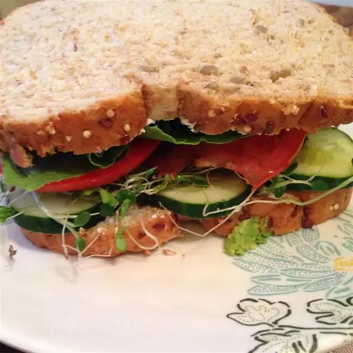

Cucumber Sandwich

Description
These delicious vegetable sandwiches are stuffed with cucumbers, sprouts, tomatoes, and avocadoes. I worked at a sandwich shop that made these vegetable sandwiches stuffed with cucumbers, sprouts, tomatoes, and avocadoes. They are a veggie lover's dream!
Prep Time: 10 mins
Total Time: 10 mins
Servings: 1
Yield: 1 sandwich
Ingredients
- 2 thick slices of your favorite bread
- 2 tablespoons cream cheese, softened
- 6 slices cucumber
- 2 tablespoons alfalfa sprouts
- 1 teaspoon olive oil
- 1 teaspoon red wine vinegar
- 1 tomato, sliced
- 1 leaf lettuce
- 1 ounce pepperoncini, sliced
- ½ avocado, mashed
Steps
- Spread each slice of bread with 1 tablespoon cream cheese.
- On one slice of bread, arrange cucumber slices in a single layer.
- Cover with sprouts, then sprinkle with oil and vinegar.
- Layer tomato slices, lettuce, and pepperoncini.
- Spread other slice of bread with mashed avocado.
- Close sandwich and serve immediately.